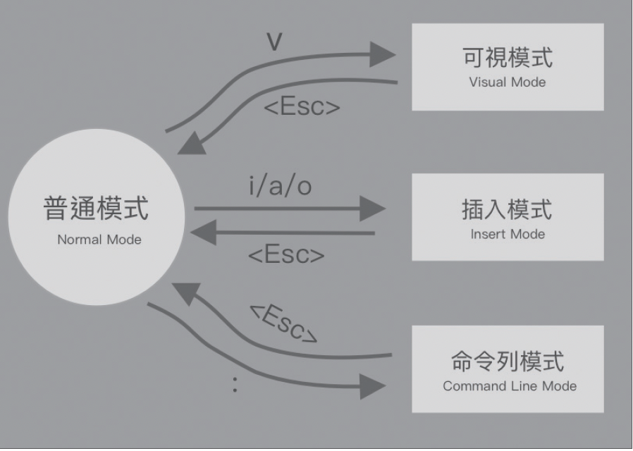
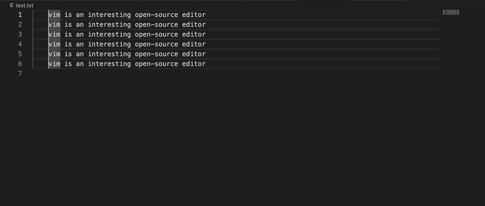
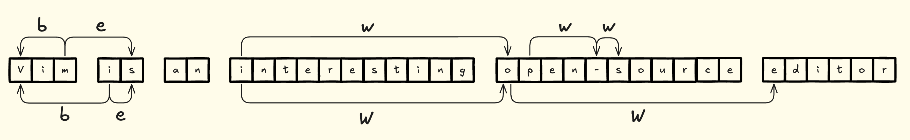
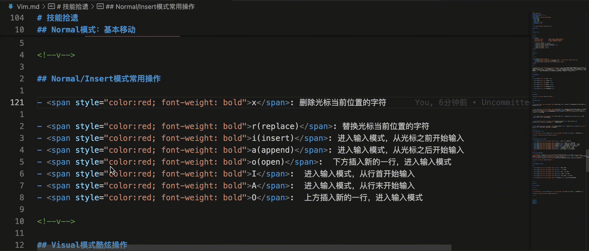
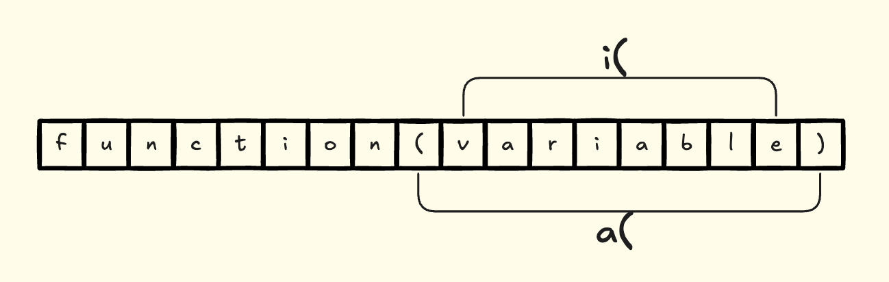
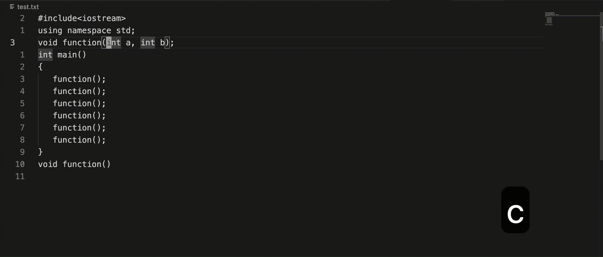
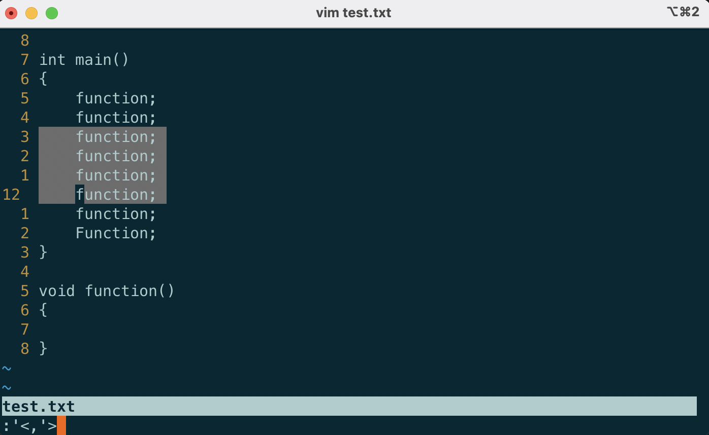
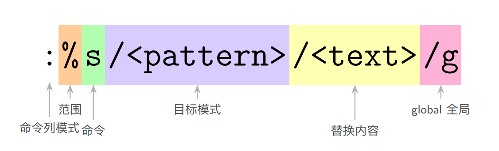

技能拾遗¶
Lec02: Vim¶
目录¶
Part 0¶
前言¶
Vim的哲学
在编程的时候，你会把大量时间花在阅读/编辑而不是在写代码上。所以，Vim 是一个多模态编辑器：它对于插入文字和操纵文字有不同的模式。Vim 是可编程的（可以使用 Vimscript 或者像 Python 一样的其他程序语言），Vim 的接口本身也是一个程序语言：键入操作（以及其助记名）是命令，这些命令也是可组合的。Vim 避免了使用鼠标，因为那样太慢了；Vim 甚至避免用上下左右键因为那样需要太多的手指移动。
Vim的优点¶
-
高效性
-
轻量级
-
可移植性
-
可拓展性
-
高度语义化
-
批量处理化
Vim模式¶

Vim模式(cont.)¶
-
Normal Mode: 普通模式，是vim的默认模式，绝大部分操作都是在这个模式下进行的
-
Visual Mode: 可视化模式，可以细分成三个子模式：普通可视化模式(按v键进入)，行可视化模式(按V键进入)，块可视化模式(按Ctrl+v键进入)，用于选中文本区域
-
Insert Mode: 插入模式，按i键进入，基本等同于平时输入的方式
-
Command Line Mode: 命令行模式，按:键进入，经常用于执行文件级别的操作
-
Replace Mode*: 替换模式，按R键进入，依次替换光标处的字符，使用频率不高
Normal模式：基本移动¶
使用hjkl对光标进行上下左右移动

Normal/Insert模式常用操作¶
-
x: 删除光标当前位置的字符
-
r(replace): 替换光标当前位置的字符
- i(insert): 进入输入模式，从光标之前开始输入
- a(append): 进入输入模式，从光标之后开始输入
- o(open): 下方插入新的一行，进入输入模式
- I: 进入输入模式，从行首开始输入
- A: 进入输入模式，从行末开始输入
- O: 上方插入新的一行，进入输入模式
Visual模式酷炫操作¶
在Visual Block模式下，可使用I或者A实现多行插入操作，在默认vim下需要按esc键确认
在Vscode Vim里则可以直接在Visual Line模式下实现上述操作

Command模式常用操作¶
-
:w: 保存当前文件
-
:q: 退出当前文件
-
:q!: 强制退出当前文件
-
:wq: 保存并退出当前文件
-
:wq!: 强制保存并退出当前文件
-
:h {command}: 提供相应command的文档
Part 1¶
动作-Motion¶
行内移动¶
b跳转到当前单词开头，e跳转到当前单词末尾，w跳转到下一单词开头

行内移动(cont.)¶
-
0: 跳转到行首
-
$: 跳转到行末
- ^: 跳转到本行首个非空白字符
- {num}_: 跳转到光标下方第{num}行的首个非空白字符，没有数字前缀时等同于^
- %: 跳转到括号的另一端，跨行也生效
- f{char} / t{char}: 跳转到本行下一个{char}字符出现处/出现前
- F{char} / T{char}: 跳转到本行上一个{char}字符出现处/出现后
- ; / ,: 对上述f / t和F / T操作的结果进行重复同向/反向查找
跨行移动¶
-
{num}j: 光标向下移动{num}行
-
{num}k: 光标向上移动{num}行
- {: 跳转到上一个非连续空行
- }: 跳转到下一个非连续空行
- /{pattern}: 按照正则表达式跳转到下一个{pattern}出现的位置
- ?{pattern}: 按照正则表达式跳转到上一个{pattern}出现的位置
- *: 采用/{pattern}的行为搜索当前光标下的单词
- n / N: 对上述/和?操作的结果进行重复同向/反向查找
页面移动¶
-
gg: 跳转到文件第一行
-
G: 跳转到文件最后一行
- Ctrl+u / Ctrl+d: 向上/向下滚动半页
- Ctrl+b / Ctrl+f: 向上/向下滚动整页
- {linenum}gg: 跳转到第{linenum}行
- zz / zt / zb: 光标聚焦到屏幕中央/顶部/底部
"飞雷神"——标记移动¶
标记移动(cont.)¶
-
m{mark}: 将当前光标位置标记为{mark}
-
`{mark}: 跳转到标记{mark}位置
- ``: 跳转到上次跳转前的位置
- `.: 跳转到上次修改的位置
常用的编辑动作¶
-
c(change): 删除内容并进入插入模式
-
d(delete): 删除内容
- y(yank): 复制文本内容
- p(paste): 粘贴文本内容。如果yank的是一整行，那么粘贴时会在光标下方新起一行
c、d、y指令往往需要结合移动指令来形成完整的指令。例如，ce是改变从光标处到单词末尾的内容，ggdG是删除文件内的所有内容，yt,是复制从光标处到逗号处的内容
这三个编辑指令连续按两次，表示作用于光标所在行。例如，cc表示修改一整行内容
重复上次的修改操作¶
.命令可以重复上一次的修改操作，在需要多次执行同一修改操作的情景下会很有用

批量动作¶
在Vim中，移动指令是可以搭配数字来使用的，例如3w表示移动到后方第三个单词的开头
而编辑动作通常会和移动指令组合，所以就会创造出以下操作：
-
c3w或3cw: 改变从光标处到后方第三个单词开头前的内容
-
d2j或2dj: 删除本行以及下两行的内容
- 3yy: 复制三行内容
Part 2¶
文本对象-TextObject¶
文本对象¶
通过i(inner)/a(around)+w(word), s(sentence), p(paragraph)以及各种配对符的组合可以产生具有语义化的文本分割

文本对象操作实例¶
例如，我们可以使用ci(来修改一个函数的参数列表

插件: Vim-surround¶
有时，我们不仅需要修改配对符里的内容，还需要修改配对符本身，而Vim本身并没有提供相应的功能，所以我们可以依靠插件vim-surround来实现
-
ysiw": 为光标所在处的单词加上双引号
-
cs"(: 表示将配对符"改为配对符(
- ds": 删除配对符"
Part 3¶
寄存器与宏¶
寄存器¶
Vim提供了用于缓存文本内容的寄存器，编辑操作总会把原本的文本内容缓存到默认寄存器
常规寄存器: 用{a-z}和{0-9}等字符来引用
特殊寄存器:
-
": Vim默认寄存器，复制、改变、删除等操作的文本内容都会被存放在此寄存器中
-
%: 存放着文件名
- +: 系统寄存器
- .: 存放上次插入的内容
- :: 存放上次执行的指令
通过:reg {reg_name}可以查看寄存器中存放的内容
指定操作使用的寄存器¶
当我们想要指定编辑操作使用的寄存器时，可以在相应指令之前加上"{reg_name}来进行寄存器切换
例如，
-
"+yy: 将光标所在行的内容复制到系统剪切板
-
"Adw: 将删除的单词内容追加存放到a寄存器
- "ap: 将a寄存器的内容粘贴出来
宏(Macro)¶
宏(Macro)¶
录制一系列键盘操作，并允许我们重放这些操作
-
q{reg_name}: 将键盘操作录制到{reg_name}寄存器下，再次按q退出录制
-
@{reg_name}: 重放{reg_name}寄存器下保存的操作
- @@: 重放上一次宏操作
录制宏时应当考虑宏的泛用性，保证在各种变化下都能产生相同的执行效果。例如，可以在操作前，先把光标移动到行首，再执行其他操作
Part 4¶
命令行模式操作¶
基本Ex命令¶
由range、command、flag(非必要)三部分构成
例如，
-
:% delete a: %表示作用于整个文件，所以这个指令就是将整个文件全部删除，并将删除的内容存放到a寄存器中
-
:2,4 yank: 表示复制第2行到第4行的内容
- :.+1, $-2 print: 表示打印光标下方一行直到倒数第三行的内容($表示最后一行)
这里的flag就是第一个指令中的寄存器a
Visual模式下的range¶
在Visual模式下可以通过:来选定range

行的复制、移动和粘贴¶
-
:[range] copy {address}: 表示将range包含的所有行复制到address后
-
:[range] move {address}: 表示将range包含的所有行移动到address后
- :{address} put {reg_name}: 表示将{reg_name}存放的内容粘贴到address后
例如，当我们想要将第一行、第三行、第五行的内容粘贴到文本末尾时，可以采取
:1 yank a
:3 yank A
:5 yank A
:$ put a
来实现
Normal命令¶
:[range] normal {commands}: 对范围内的所有行执行normal模式下的commands命令
另外Normal命令还可以配合.命令和宏使用
- :[range] normal .: 对范围内所有行重复执行上次的修改操作
- :[range] normal @{reg_name}: 对范围内所有行重放{reg_name}中存放的宏操作
Global命令¶
:[range] global/{pattern}/{command}: 对范围内所有符合{pattern}的行执行command模式下的Ex命令，缺省为print
Global命令可以嵌套Normal命令使用，达到相当强大的效果
例如，删除全文中的单行注释，可以使用:% g/\/\//normal /\s*\/\/\<CR>d$来实现，原理是先用global筛选出带有//的行(/需要进行转义)，然后用\s*\/\/匹配//以及前方的空白字符，\<CR>表示回车，需要通过Ctrl+v+回车来进行特殊输入，表示确认搜索，最后用d$，来删除后方所有内容
全文文本替换¶

全文文本替换(cont.)¶
:[range]s/{pattern}/{text}/{flags}: 表示将符合{pattern}的字符串替换成{text}
{flags}包含：
-
g: 表示global，全局生效
-
i: 表示大小写不敏感
- c: 对每一个匹配项替换前进行确认
- n: 计数
例如，:%s/vim//gn会统计文件中vim出现的次数，而不关注中间{text}部分的内容
对于之前提到过的“删除全文中的单行注释”，也可以使用:%s/\s*\/\/.*//g来实现